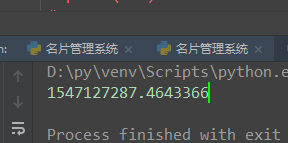

目录
一.基本知识
格式化的时间字符串(Format String)： ‘1999-12-06’
%y 两位数的年份表示（00-99）
%Y 四位数的年份表示（000-9999）
%m 月份（01-12）
%d 月内中的一天（0-31）
%H 24小时制小时数（0-23）
%I 12小时制小时数（01-12）
%M 分钟数（00=59）
%S 秒（00-59）
%a 本地简化星期名称
%A 本地完整星期名称
%b 本地简化的月份名称
%B 本地完整的月份名称
%c 本地相应的日期表示和时间表示
%j 年内的一天（001-366）
%p 本地A.M.或P.M.的等价符
%U 一年中的星期数（00-53）星期天为星期的开始
%w 星期（0-6），星期天为星期的开始
%W 一年中的星期数（00-53）星期一为星期的开始
%x 本地相应的日期表示
%X 本地相应的时间表示 直接融合了时分秒
%Z 当前时区的名称
%% %号本身
二.time模块中的方法
前提：必须引入time模块
（1）sleep睡眠功能
time.sleep(x)
睡眠功能：让睡眠功能下面的程序等待XX时间再运行
- import time
- print("斯人若彩虹")
- time.sleep(5)
- print("遇上方可知")
当我们打印斯人若彩虹之后，需要等待5秒，才会打印遇上方可知（不能传递动图，自己尝试吧）
结果如下：
（2）时间戳
就是从1970年1月1号到现在为止所经历的秒数
现在的时间
- import time
- #1时间戳
- ret = time.time()
- print(ret)

（3）时间元组
时间元组，就是此刻！现在这个时间的时间元组！！！
此刻的时间：
.我们运用程序显示时间元组：
- ret = time.localtime()
- print(ret)
- #
结果如下：（4）时间戳转换成时间元组
一共两个方法。
1.gmtime
time.gmtime()和time.localtime() 返回的是utc时间与北京时间减少8小时我们的时间戳：ret= time.time()[此刻的时间！]
- #第一种方法
- #1.括号里面不加内容就是现在，此刻的时间。
- ret = time.gmtime()
- print(ret)
- #2.也可以在括号中加我们的时间戳
- ret = time.gmtime(1600000)
- print(ret)
2.localtime
- ret = time.localtime()#将指定的时间戳转化为时间元组
- print(ret)
- ret = time.localtime(1600000)
- print(ret)
和gmtime一样的作用
（5）时间元组转换成时间戳mktime
- ret = time.localtime()#时间元组
- ts = time.mktime(ret)#将时间元组转化成时间戳
-
- print(ts)
结果如下：

（6）时间元组转换成字符串 strftime
- ret1 =time.localtime(1500000)
- ret = time.strftime('%Y-%m-%d %X',ret1)
- print(ret)
结果如下：
（7）字符串转换成时间元组 strptime
- ret = time.strptime('1970-11-22','%Y-%m-%d')
- print(ret)
三.实例
打出你出生到现在所有的秒数
1.先变成时间元组
2.再变成时间戳
3.再相互减
4.得到结论
- old_time= time.mktime(time.strptime('1997-09-30','%Y-%m-%d'))
- new_time = time.mktime(time.strptime('2018-01-10','%Y-%m-%d'))
- time = new_time-old_time
- print(time)


![]()
 1万+
1万+
 举报
举报
 1
1